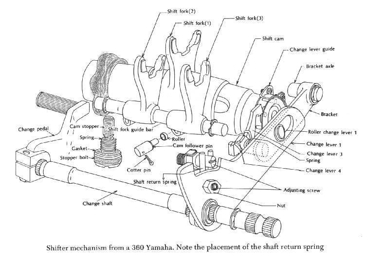
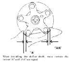
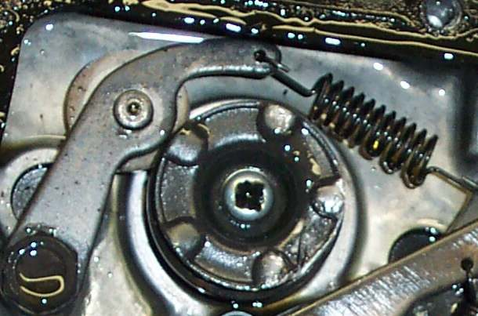
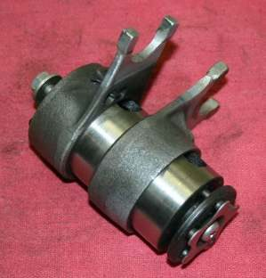

You change gear and the engine suddenly revs with no drive, as if in neutral, but the N light stays off. The gear did not fully engage: the dogs (square teeth on the side of a gear) did not lock into the next gear. Most often the lever is not moving through its full stroke because it is slipping, bent, set too high or too low, or the rider's boot is not completing the change. Less often a weak stopper arm spring or worn parts inside the gearbox let the drum stop between positions.
Is it safe to ride?
Ride with care. A sudden loss of drive while overtaking or climbing can unsettle the bike, and the over-revving engine can be damaged. Change gear firmly and fully until it is fixed.
Quick checks first
- Does the gear lever move on its shaft when you wiggle it?
- Is the lever height right for your boot? Can you move it fully up and down?
- Is it always between the same two gears?
- Do you change with the throttle closed and the clutch fully pulled?
Diagnose it step by step
1Hold the lever near the shaft and wiggle it. Does it move without the shaft moving, or is the clamp bolt loose?
- Yes: Refit or replace the gear lever.
- No: go to step 2.
2Can your boot move the lever through its full travel, without the lever hitting the footpeg, case or mud?
- No: reset the lever height or clear the obstruction. Check the gear lever and shift linkage.
- Yes: go to step 3.
3On a linkage (rod and ball joints), is there play in any joint, or is the pivot stiff?
- Yes: Check the gear lever and shift linkage.
- No: go to step 4.
4Do false neutrals stop when you change with a firm, complete stroke and the throttle closed?
- Yes: technique was the cause. A quick, half-hearted stroke often stops halfway.
- No: go to step 5.
5Is the clutch releasing fully? (Bike does not creep with the lever pulled.)
- No: Adjust clutch lever free play.
- Yes: go to step 6.
6Still finding false neutrals?
- The stopper arm spring may be weak, or the drum, forks or dogs worn. Go to Assess internal gearbox faults. Fix it early: repeated part-engagement rounds off the dogs and leads to Jumps out of gear under load.
Causes, most likely first
| Cause | How to confirm | Fix |
|---|---|---|
| Lever slipping on splines or loose | Lever moves, shaft does not | Refit or replace the gear lever |
| Lever height or obstruction | Short stroke under the boot | Check the gear lever and shift linkage |
| Worn linkage joints | Play at ball joints | Check the gear lever and shift linkage |
| Incomplete change | Stops with a firm stroke | Change firmly, throttle closed |
| Weak stopper spring or worn drum, forks, dogs | Persists after the above | Assess internal gearbox faults |